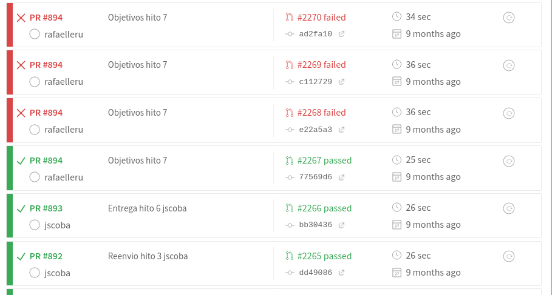
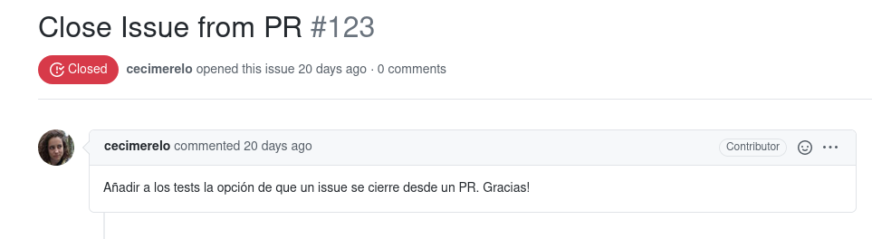

Project-based
learning
Upside-down classIn GitHub
Y, por supuesto, hacerlo en GitHub. El hecho de usar GitHub para las
entregas ya, de por sí, tiene ciertas ventajas: notificación
de las entregas, comentarios sobre la misma... Los PRs los
usamos desde 2015, y aquí , por
ejemplo, el año siguiente se ve cómo se usan reviews, por
ejemplo. Sin embargo, 0 tests
GitHub knows
Let GitHub test it
PR checks: Perl FTW
my $repo = Git->repository ( Directory => '.' );
my $diff = $repo->command('diff','HEAD^1','HEAD');
my $diff_regex = qr/a\/proyectos\/hito-(\d)\.md/;
my $github;
SKIP: {
my ($this_hito) = ($diff =~ $diff_regex);
skip "No hay envío de proyecto", 5 unless defined $this_hito; my @files = split(/diff --git/,$diff);
my ($diff_hito) = grep( /$diff_regex/, @files);
say "Tratando diff\n\t$diff_hito";
my @lines = split("\n",$diff_hito);
my @adds = grep(/^\+[^+]/,@lines);
is( $#adds, 0, "Añade sólo una línea");
my $url_repo;
if ( $adds[0] =~ /\(http/ ) {
($url_repo) = ($adds[0] =~ /\((http\S+)\)/);
} else {
($url_repo) = ($adds[0] =~ /^\+.+(http\S+)/s);
}Initially it used scraping over the
repo, now it uses the Github API through github actions
Test until it works
Big switch: learn while you submit
Lo que está muerto, sí se puede matar
Learning (objects) as code
doing("hito 5");
my ($deployment_url) = ($README =~ /Despliegue final:\s+(\S+)\b/);
if ( $deployment_url ) {
diag "☑ Detectada IP de despliegue $deployment_url";
} else {
diag "✗ Problemas detectando IP de despliegue";
}
unlike( $deployment_url, qr/(heroku|now)/, "Despliegue efectivamente hecho en IaaS" );
isnt( $deployment_url, "", "URL de despliegue hito 5");
check_ip($deployment_url);
my $status = get "http://$deployment_url/status";
isnt( $status, undef, "Despliegue correcto en $deployment_url/status" );
my $status_ref = from_json( $status );
like ( $status_ref->{'status'}, qr/[Oo][Kk]/, "Status de $deployment_url correcto");
Los tests son las especificaciones
de lo que hay que aprender.
GitHub Actions : big boostname: "Comprueba hitos y milestones"
on:
pull_request:
paths:
- 'proyectos/hito-[1234567].md'
- '!objetivos/*.(md|org)'
jobs:
obtain-repo:
runs-on: ubuntu-latest
steps:
- name: Extrae URL del repositorio
uses: JJ/github-pr-contains-action@releases/v1
with:
github-token: ${{github.token}}
filesChanged: 1
- name: Comprueba hitos e issues
uses: JJ/repo-in-diff-gh-action@releases/v0
with:
github-token: ${{github.token}}
minMilestones: 3En la primera parte miramos al
diff; en la segunda es donde efectivamente comprobamos los
milestones y demás.
const milestones = await github.issues.listMilestonesForRepo( { owner: user, repo: repo } )
if ( ! milestones.data.length ) {
core.setFailed("❌ There should be at least one milestone")
}
const minMilestones = +core.getInput('minMilestones')
if ( minMilestones && milestones.data.length < minMilestones ) {
core.setFailed( "❌ There should be more than " + minMilestones + " milestone(s)");
}
var totalIssues = 0
var totalClosedIssues = 0
milestones.data.forEach( async function( milestone ) {
totalIssues += milestone.open_issues + milestone.closed_issues
totalClosedIssues += milestone.closed_issues
})
console.log( "✅ There are " + totalIssues + "
issues in your milestones and " + totalClosedIssues + "
closed issues ")Escritos en typescript, tienes
acceso a una serie de argumentos, pero lo más importante
es que puedes acceder fácilmente al API. Cuando empecé
con esto estaban en beta limitada, y la forma de
documentarse era a base de mirar los fuentes de las
actions y buscar en GitHub.
Speedier tests → better learning

No sólo era más rápido, la
duración era más consistente. En travis es difícil que
algo tarde menos de 15 segundos, pero se llegaba a una
velocidad bastante buena.
Docker FTW
FROM perl:5.32-slim-threaded
LABEL version="1.5" maintainer="JJ Merelo " perl5version="5.28"
# Set up dir and download modules
RUN chmod o+r /etc/resolv.conf
RUN mkdir /test && apt-get update \
&& apt-get install -y git curl libio-socket-ssl-perl libnet-ssleay-perl gcc \
&& cpanm Test::More Test::Harness Git File::Slurper JSON TAP::Formatter::Color Term::ANSIColor Mojo::UserAgent Net::Ping YAML
RUN perl --version
VOLUME /test
WORKDIR /test
ENTRYPOINT prove -I/usr/lib -c El tener todos los módulos
instalados es un ahorro de los aproximadamente dos
minutos y medio que se tarda. No es una gran cosa en
un sistema de producción, pero en los estudiantes es
la diferencia entre enviar y largarse y enviar y
esperar a ver qué pasa → mejora en el aprendizaje.
2020 üìÖ github script + API v4 (GraphQL)
const query = `query($owner:String!, $name:String!, $issue:Int!) {
repository(name: $name , owner: $owner ) {
issue(number: $issue) {
timelineItems(itemTypes: CLOSED_EVENT, last: 1) {
nodes {
... on ClosedEvent {
closer {
__typename
}
}
}
}
}
}
}`;Students are your customers.

En este caso, también tus
hijas... En todo caso, el resultado final no es el de
este issue, sino de otros dos que tenían diferentes
casuísticas. Finalmente, la solución con GraphQL fue la
más adecuada (y consecuencia de la ayuda de alguien en
Stackoverflow).
If GitHub knows...
Se rompe el límite de sólo poder
corregir lo que uno puede físicamente hacer. Cosas que
son imposibles, como comprobar que todos los issues se
han cerrado con un commit (o PR), ahora se pueden hacer
fácilmente. Y a escala: más estudiantes no te quitan
tiempo, y te dejan centrarte en aconsejar al estudiante
mejoras en su código o en la forma de presentarlo.